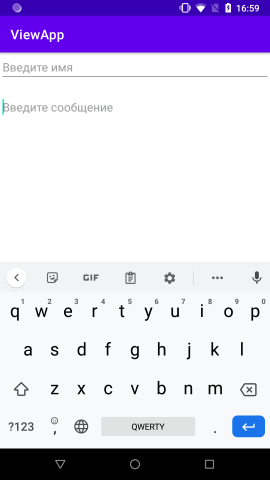

AbsoluteLayout — означает что каждый элемент верстки будет иметь абсолютную позицию относительно верхнего левого угла экрана задаваемую с помощью координат x и y. Т.е. верхний левый угол экрана при AbsoluteLayout имеет координаты x = 0, y = 0. При этом Absolute Layout не рекомендуется использовать из-за его плохой адаптивности.
FrameLayout — тип верстки, внутри которого может отображаться только один элемент в строке. Т. е. если внутри FrameLayout вы поместите несколько элементов, то следующий будет отображаться поверх предыдущего.
LinearLayout — тип верстки, при котором область верстки делится на строки и в каждую строку помещается один элемент. Разбиение может быть вертикальное или горизонтальное, тип разбиения указывается в атрибуте LinearLayout android:orientation.
RelativeLayout — тип верстки, при котором позиционирование элементов происходит относительно друг друга и относительно главного контейнера.
TableLayout — табличная верстка. Организует элементы в строки и столбцы таблицы.
Alternate Layouts - альтернативная верстка. Позволяет использовать различную верстку для различных ориентаций экрана. XML для альтернативной верстки помещается в папки проекта:
res/layout-land - альтернативная верстка для landscape UI.
res/layout-port - альтернативная верстка для portrait UI.
res/layout-square - альтернативная верстка для square UI.
и перед тем, как получить макет из res/layout система проверяет наличие файлов в этих папках.
Графический интерфейс пользователя представляет собой иерархию объектов android.view.View и android.view.ViewGroup. Каждый объект ViewGroup представляет контейнер, который содержит и упорядочивает дочерние объекты View. В частности, к контейнерам относят такие элементы, как RelativeLayout, LinearLayout, GridLayout, ConstraintLayout и ряд других.
Простые объекты View представляют собой элементы управления и прочие виджеты, например, кнопки, текстовые поля и т.д., через которые пользователь взаимодействует с программой.
Для работы с визуальными элементами создадим новый проект. В качестве шаблона проекта выберем Empty Activity:
Пусть он будет называться Booking:
Для лучшего понимания среды Android Studio оно было разделено на 4 части:
- Часть меню: в этом разделе представлены опции для создания нового проекта, открытия существующего проекта Android Studio, кнопка для запуска приложения, выпадающий список для выбора нужного устройства для запуска и тестирования приложения.
- Область верстки: в этом разделе предусмотрено написание кода для таких файлов, как .xml, .java, .kt. Это позволяет открывать несколько файлов одновременно на разных вкладках, но позволяет редактировать по одному файлу за раз.
- Структура проекта: эта область позволяет нам исследовать каждый файл проекта. Существуют различные представления о структуре. Android — это обобщенное представление иерархии структуры проекта, а Project —подробное представление иерархии проекта. Взгляните на следующее изображение.
- Текущая часть выполнения: одна из самых важных частей среды Android Studio. Оно предоставляет подробное представление о текущем выполнении процесса или действия. В нем показано, какие ошибки, выходные данные сборки, результаты logcat и т. д.

Как правило, для определения визуального интерфейса в проектах под Android используются специальные файлы xml. Эти файлы являются ресурсами разметки и хранят определение визуального интерфейса в виде кода XML. Подобный подход напоминает создание веб-сайтов, когда интерфейс определяется в файлах html, а логика приложения - в коде javascript.
Объявление пользовательского интерфейса в файлах XML позволяет отделить интерфейс приложения от кода. Что означает, что мы можем изменять определение интерфейса без изменения кода java. Например, в приложении могут быть определены разметки в файлах XML для различных ориентаций монитора, различных размеров устройств, различных языков и т.д. Кроме того, объявление разметки в XML позволяет легче визуализировать структуру интерфейса и облегчает отладку.
Файлы разметки графического интерфейса располагаются в проекте в каталоге res/layout. По умолчанию при создании проекта с пустой activity уже есть один файл ресурсов разметки activity_main.xml, который может выглядеть примерно так:
Здесь ширина и высота – это размерность макета / вида, которая может быть указана в единицах dp (пиксели, не зависящие от плотности), sp (пиксели, не зависящие от масштаба), pt (точки, составляющие 1/72 дюйма), px (Пиксели), мм (миллиметры) и, наконец, в (дюймах).
Вы можете указать ширину и высоту с точными измерениями, но чаще вы будете использовать одну из этих констант для установки ширины или высоты:
- android: layout_width = wrap_content указывает вашему виду масштабироваться до размеров, требуемых его содержимым.
- android: layout_width = fill_parent говорит о том, что ваше представление становится таким же большим, как и его родительское представление.
- android: layout_width = wrap_content указывает вашему виду масштабироваться до размеров, требуемых его содержимым.
- android: layout_width = fill_parent говорит о том, что ваше представление становится таким же большим, как и его родительское представление.
Объекту представления может быть присвоен уникальный идентификатор, который будет уникально идентифицировать представление в дереве. Синтаксис для идентификатора внутри тега XML: android:id="@+id/my_button"
Символ-символ (@) в начале строки указывает, что анализатор XML должен проанализировать и развернуть оставшуюся часть строки идентификатора и идентифицировать ее как ресурс идентификатора.
Знак плюс (+) означает, что это новое имя ресурса, которое необходимо создать и добавить в наши ресурсы. Чтобы создать экземпляр объекта представления и захватить его из макета, используйте следующее –
Но у нас может быть и несколько различных ресурсов layout. Как правило, каждый отдельный класс Activity использует свой файл layout. Либо для одного класса Activity может использоваться сразу несколько различных файлов layout.
К примеру, добавим в проект новый файл разметки интерфейса. Для этого нажмем на папку res/layout правой кнопкой мыши и в появившемся меню выберем пункт New -> Layout Resource File:
ConstraintLayout представляет контейнер, который позволяет создавать гибкие и масштабируемые визуальные интерфейсы. Для позиционирования элемента внутри ConstraintLayout необходимо указать ограничения (constraints). Есть несколько типов ограничений. Каждое ограничение устанавливает позиционирование элемента либо по горизонтали, либо по вертикали. И для определения позиции элемента в ConstraintLayout необходимо указать как минимум одно ограничение по горизонтали и одно ограничение по вертикали.
Позиционирования может производиться относительно границ самого контейнера ConstraintLayout (в этом случае ограничение имеет значение parent), либо же относительно любого другого элемента внутри ConstraintLayout, тогда в качестве значения ограничения указывается id этого элемента.
В данном случае у элемента TextView установлено два ограничение: одно погоризонтальной линии (app:layout_constraintLeft_toLeftOf="parent"), второе - по вертикальной линии (app:layout_constraintTop_toTopOf="parent"). Оба ограничения устанавливаются относительно контейнера ConstraintLayout, поэтому они принимают значение parent, то есть ConstraintLayout.
Ограничение app:layout_constraintLeft_toLeftOf="parent" устанавливает левую границу TextView у левой границы контейнера.
Ограничение app:layout_constraintTop_toTopOf="parent" устанавливает верхнюю границу TextView у верхней границы контейнера.
В итоге TextView будет располагаться в верхнем левом углу контейнера. Стоит обратить внимание, что все эти атрибуты ограничений берутся из пространства имен "http://schemas.android.com/apk/res-auto", которое проецируется на префикс app.
Если необходимо установить ограничение относительно другого элемента, то необходимо указать id этого элемента:
Подобным образом можно составлять различные комбинации атрибутов для определения нужного нам позиционирования. Например, изменим код кнопки:
В данном случае верхняя граница кнопки выравнивается по нижней границе EditText.
При разработке приложений под Android мы можем использовать различные типы измерений:
- px: пиксели текущего экрана. Однако эта единица измерения не рекомендуется, так как реальное представление внешнего вида может изменяться в зависимости от устройства; каждое устройство имеет определенный набор пикселей на дюйм, поэтому количество пикселей на экране может также меняться
- dp: (device-independent pixels) независимые от плотности экрана пиксели. Абстрактная единица измерения, основанная на физической плотности экрана с разрешением 160 dpi (точек на дюйм). В этом случае 1dp = 1px. Если размер экрана больше или меньше, чем 160dpi, количество пикселей, которые применяются для отрисовки 1dp соответственно увеличивается или уменьшается. Например, на экране с 240 dpi 1dp=1,5px, а на экране с 320dpi 1dp=2px. Общая формула для получения количества физических пикселей из dp: px = dp * (dpi / 160)
- sp: (scale-independent pixels) независимые от масштабирования пиксели. Допускают настройку размеров, производимую пользователем. Рекомендуются для работы со шрифтами.
- pt: 1/72 дюйма, базируются на физических размерах экрана
- mm: миллиметры
- in: дюймы
Предпочтительными единицами для использования являются dp. Это связано с тем, что мир мобильных устройств на Android сильно фрагментирован в плане разрешения и размеров экрана. И чем больше плотность пикселей на дюйм, тем соответственно больше пикселей нам будет доступно.
Все визуальные элементы, которые мы используем в приложении, как правило, упорядочиваются на экране с помощью контейнеров. В Android подобными контейнерами служат такие классы как RelativeLayout, LinearLayout, GridLayout, TableLayout, ConstraintLayout, FrameLayout. Все они по-разному располагают элементы и управляют ими, но есть некоторые общие моменты при компоновке визуальных компонентов, которые мы сейчас рассмотрим.
Для организации элементов внутри контейнера используются параметры разметки. Для их задания в файле xml используются атрибуты, которые начинаются с префикса layout_. В частности, к таким параметрам относятся атрибуты layout_height и layout_width, которые используются для установки размеров и могут использовать одну из следующих опций:
- Растяжение по всей ширине или высоте контейнера с помощью значения match_parent (для всех контейнеров кроме ConstraintLayout) или 0dp (для ConstraintLayout)
- Растяжение элемента до тех границ, которые достаточны, чтобы вместить все его содержимое с помощью значения wrap_content
- Точные размеры элемента, например, 96 dp
Установка значения match_parent позволяет растянуть элемент по всей ширине или высоте контейнера. Стоит отметить, что данное значение применяется ко всем контейнерам, кроме ConstraintLayout.
Значение wrap_content устанавливает те значения для ширины или высоты, которые необходимы, чтобы разместить на экране содержимое элемента:
Здесь элемент TextView растягивается до тех значений, которые достаточны для размещения его текста.
Также мы можем установить точные значения:
Кроме того, можно комбинировать несколько значений, например, растянуть по ширине содержимого и установить точные значения для высоты. Параметры разметки позволяют задать отступы как от внешних границ элемента до границ контейнера, так и внутри самого элемента между его границами и содержимым.
Для установки внутренних отступов применяется атрибут android:padding. Он устанавливает отступы контента от всех четырех сторон контейнера. Можно устанавливать отступы только от одной стороны контейнера, применяя следующие атрибуты: android:paddingLeft, android:paddingRight, android:paddingTop и android:paddingBottom.
Для установки внешних отступов используется атрибут layout_margin. Данный атрибут имеет модификации, которые позволяют задать отступ только от одной стороны: android:layout_marginBottom, android:layout_marginTop, android:layout_marginLeft и android:layout_marginRight (отступы соответственно от нижней, верхней, левой и правой границ).
Здесь у TextView задаются отступы от двух сторон ConstraintLayout (слева 60 единиц и сверху 50 единиц):
Контейнер LinearLayout представляет простейший контейнер - объект ViewGroup, который упорядочивает все дочерние элементы в одном направлении: по горизонтали или по вертикали. Все элементы расположены один за другим. Направление разметки указывается с помощью атрибута android:orientation.
Если, например, ориентация разметки вертикальная (android:orientation="vertical"), то все элементы располагаются в столбик - по одному элементу на каждой строке. Если ориентация горизонтальная (android:orientation="horizontal"), то элементы располагаются в одну строку. Например, расположим элементы в горизонтальный ряд:
Если бы мы указали для LinearLayout атрибут android:orientation="vertical", то элементы размещались бы по вертикали:
Атрибут layout_gravity позволяет устанавливать позиционирование относительно LinearLayout.
RelativeLayout представляет объект ViewGroup, который располагает дочерние элементы относительно позиции других дочерних элементов разметки или относительно области самой разметки RelativeLayout. Используя относительное позиционирование, мы можем установить элемент по правому краю или в центре или иным способом, который предоставляет данный контейнер.
Контейнер TableLayout структурирует элементы управления в виде таблицы по столбцам и строкам:
Контейнер FrameLayout предназначен для вывода на экран одного помещенного в него визуального элемента. Если же мы поместим несколько элементов, то они будут накладываться друг на друга. Тем не менее также можно располагать в FrameLayout несколько элементов.
GridLayout представляет еще один контейнер, который позволяет создавать табличные представления. GridLayout состоит из коллекции строк, каждая из которых состоит из отдельных ячеек:
С помощью атрибутов android:rowCount и android:columnCount устанавливается число строк и столбцов соответственно. Так, в данном случае устанавливаем 3 строки и 3 столбца. GridLayout автоматически может позиционировать вложенные элементы управления по строкам. Так, в нашем случае первая кнопка попадает в первую ячейку (первая строка первый столбец), вторая кнопка - во вторую ячейку и так далее.
При этом ширина столбцов устанавливается автоматически по ширине самого широкого элемента.
Однако мы можем явно задать номер столбца и строки для определенного элемента, а при необходимости растянуть на несколько столбцов или строк. Для этого мы можем применять следующие атрибуты:
- android:layout_column: номер столбца (отсчет идет от нуля)
- android:layout_row: номер строки
- android:layout_columnSpan: количество столбцов, на которые растягивается элемент
- android:layout_rowSpan: количество строк, на которые растягивается элемент
Элемент EditText является подклассом класса TextView. Он также представляет текстовое поле, но теперь уже с возможностью ввода и редактирования текста. Таким образом, в EditText мы можем использовать все те же возможности, что и в TextView.
Из тех атрибутов, что не рассматривались в теме про TextView, следует отметить атрибут android:hint. Он позволяет задать текст, который будет отображаться в качестве подсказки, если элемент EditText пуст. Кроме того, мы можем использовать атрибут android:inputType, который позволяет задать клавиатуру для ввода.
Первое поле здесь обычное однострочное, а второе - многострочное. Чтобы во втором поле текст выравнивался по верху, дополнительно устанавливается атрибут android:gravity="top".

Одним из часто используемых элементов являются кнопки, которые представлены классом android.widget.Button. Ключевой особенностью кнопок является возможность взаимодействия с пользователем через нажатия.
Некоторые ключевые атрибуты, которые можно задать у кнопок:
- text: задает текст на кнопке
- textColor: задает цвет текста на кнопке
- background: задает фоновый цвет кнопки
- textAllCaps: при значении true устанавливает текст в верхнем регистре. По умолчанию как раз и применяется значение true
- onClick: задает обработчик нажатия кнопки
Итак, изменим код в activity_main.xml следующим образом:
При помощью атрибута android:onClick можно задать метод в коде java, который будет обрабатывать нажатия кнопки. Так, в вышеприведенном примере это метод sendMessage. Теперь перейдем к коду MainActivity и пропишем в нем такой метод:

В данном случае после нажатия на кнопку в TextView выводится текст из EditText.
Для создания простых уведомлений в Android используется класс Toast. Фактически Toast представляет всплывающее окно с некоторым текстом, которое отображается в течение некоторого времени.
Объект Toast нельзя создать в коде разметки xml, например, в файл activity_main.xml. Toast можно использовать только в коде java.
Так, определим в файле разметки activity_main.xml кнопку:
У кнопки установлен обработчик нажатия - метод onClick. Определим его в коде MainActivity:
В обработчике отображается всплывающее окно. Для его создания применяется метод Toast.makeText(), в который передается три параметра: текущий контекст (текущий объект activity), отображаемый текст и время отображения окна.
Для самого отображения окна вызывается метод show():
Ресурс в приложении Android представляет собой файл, например, файл разметки интерфейса
или некоторое значение, например, простую строку. То есть ресурсы представляют собой и файлы разметки, и отдельные строки, и звуковые файлы, файлы изображений и т.д.
Все ресурсы находятся в проекте в каталоге res. Для различных типов ресурсов, определенных в проекте, в каталоге res создаются подкаталоги.
Поддерживаемые подкаталоги:
- animator/: xml-файлы, определяющие анимацию свойств
- anim/: xml-файлы, определяющие tween-анимацию
- color/: xml-файлы, определяющие список цветов
- drawable/: Графические файлы (.png, .jpg, .gif)
- mipmap/: Графические файлы, используемые для иконок приложения под различные разрешения экранов
- layout/: xml-файлы, определяющие пользовательский интерфейс приложения
- menu/: xml-файлы, определяющие меню приложения
- raw/: различные файлы, которые сохраняются в исходном виде
- values/: xml-файлы, которые содержат различные используемые в приложении значения, например, ресурсы строк
- xml/: Произвольные xml-файлы
- font/: файлы с определениями шрифтом и расширениями .ttf, .otf или .ttc, либо файлы XML, который содержат элемент fontFamily
Нередко возникает необходимость ссылаться на ресурс в файле xml, например, в файле, который определяет визуальный
интерфейс, к примеру, в activity_main.xml.
Ссылки на ресурсы в файлах xml имеют следующую формализованную форму:
@[имя_пакета:]тип_ресурса/имя_ресурса
- имя_пакета представляет имя пакета, в котором ресурс находится (указывать необязательно, если ресурс находится в том же пакете)
- тип_ресурса представляет подкласс, определенный в классе R для типа ресурса
- имя_ресурса имя файла ресурса без расширения или значение атрибута android:name в XML-элементе (для простых значений).